Client Work
A content and production story across two fitness brands in Bangalore. Different briefs, different scales, different constraints. What the work revealed about the distance between making content and building a presence.
The brief
Kintore needed content that matched its ambition. A gym with good equipment and a loyal local base, but a weak social presence. I was brought in with full creative freedom to produce video and photo content that would be fed to an external marketing agency managing their account.
What I did
Pre and post production end to end. Concepts, shot lists, on-site direction, cinematic editing in DaVinci Resolve with colour grading and sound design. Researched health and fitness topics for captions and carousel copy. During transitions between agencies, I handled stories, posts, and captions directly. Produced 40+ video and photo assets across the engagement, all shot, directed, and edited by me.
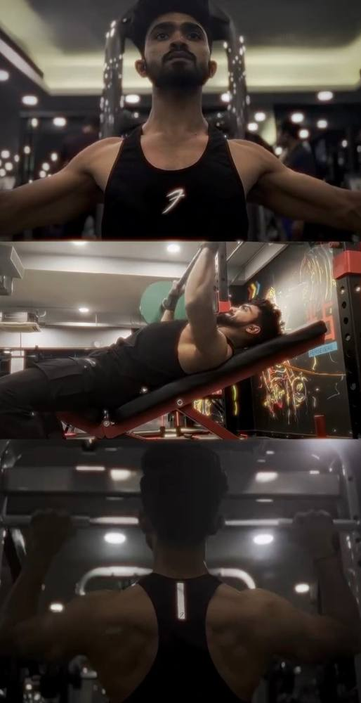
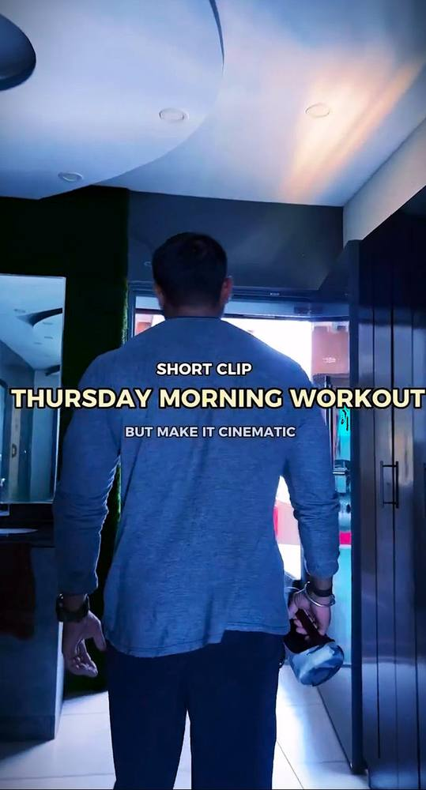
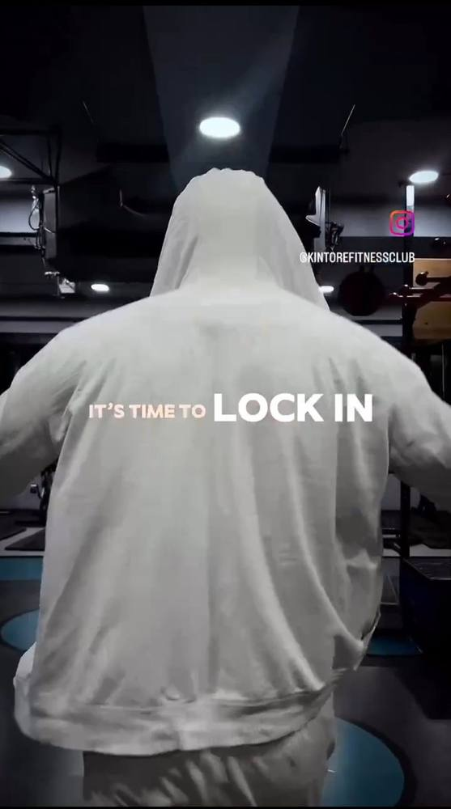
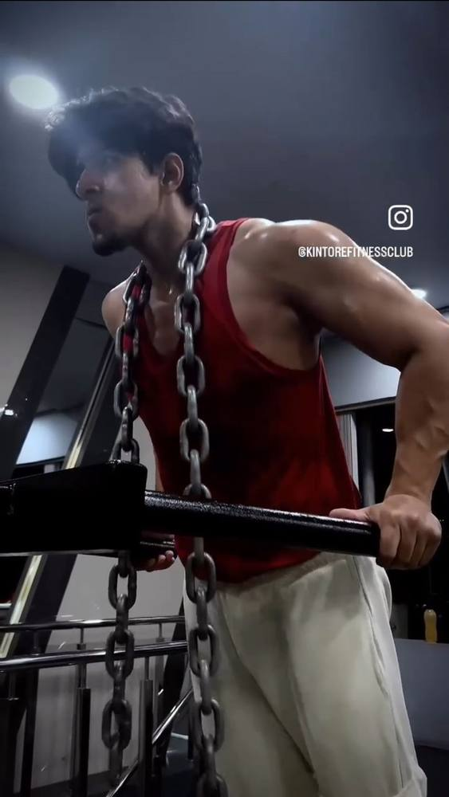
Video work
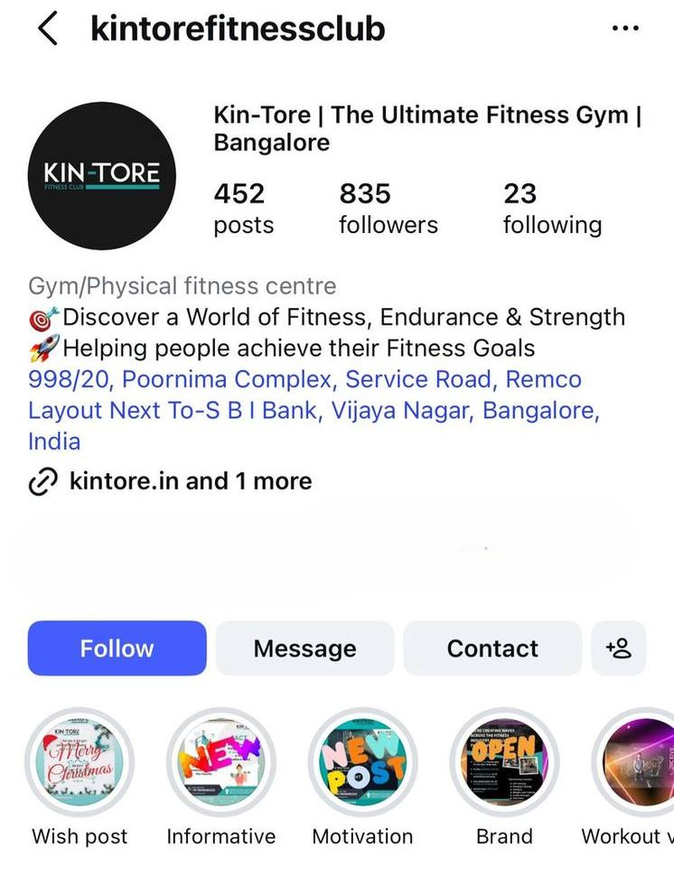
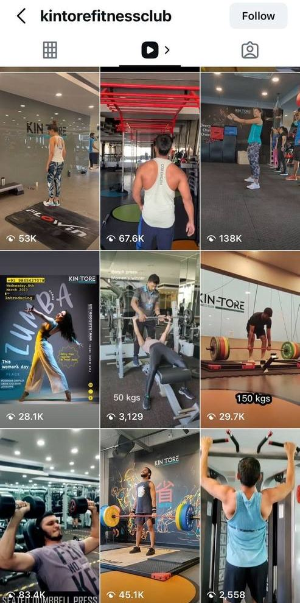
What I observed
The content performed. Individual reels hit strong view counts organically. But it hit a ceiling. Staff turnover was high, the on-ground experience was inconsistent, and what members saw on Instagram didn't always match what they experienced walking in. Content was doing its job; the environment it was amplifying wasn't holding up its end.
The brief
SK-27 was launching a new branch and needed everything from scratch. Instagram account, content library, brand presence. Full social media management from day one, with no existing audience to build on.
What I did
Managed the account across a concentrated two month period covering launch content, event campaigns, and daily community engagement. Posts, carousels, reels, daily stories, live sessions, and caption writing. Organised content around events like marathon partnerships, new class launches, and seasonal campaigns. Built relationships with members, staff, and local fitness partners on the ground. Community engagement through challenges, UGC promotion, and boosted posts.
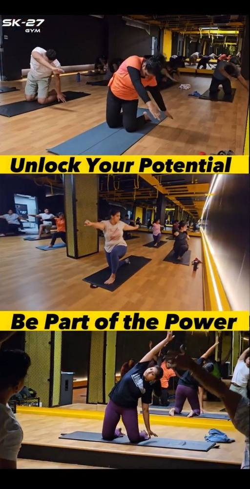
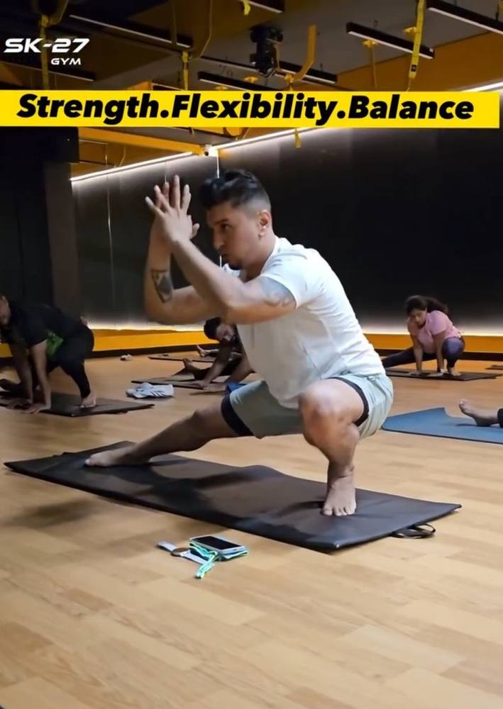
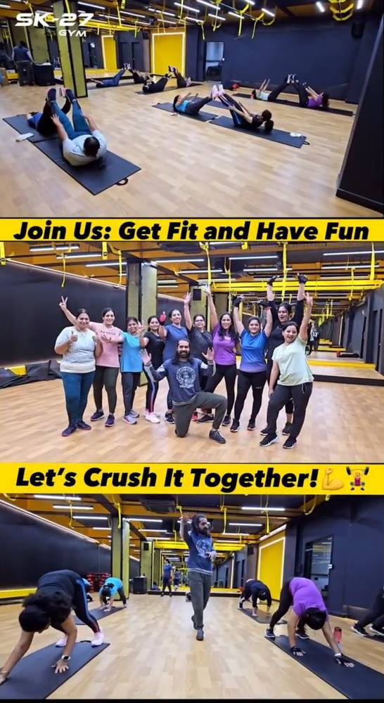
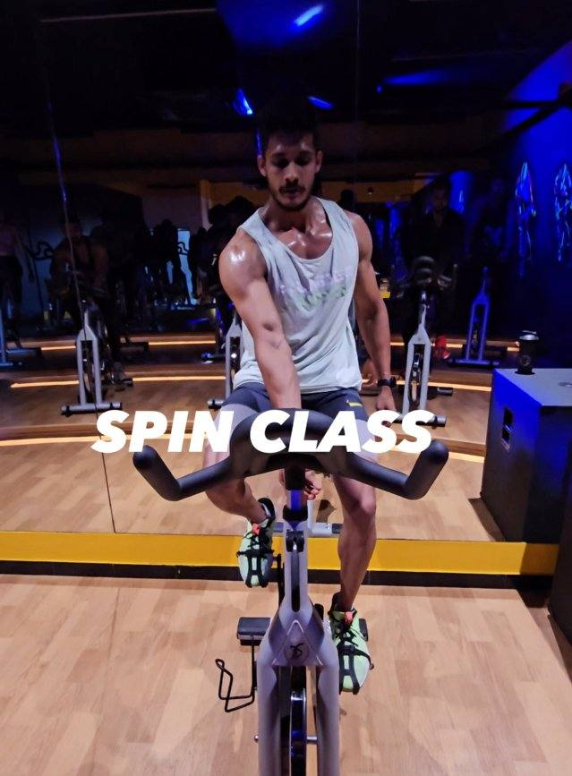
Video work
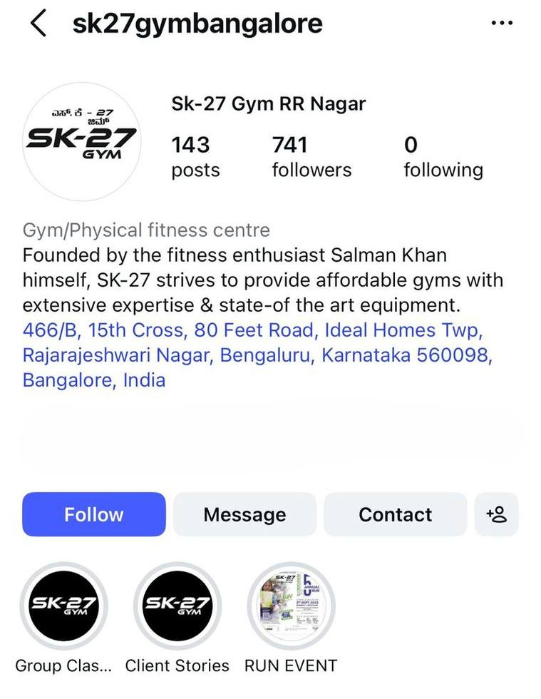
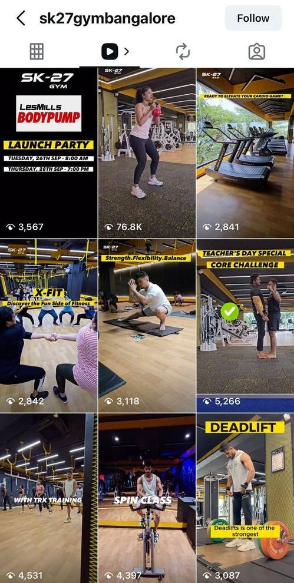
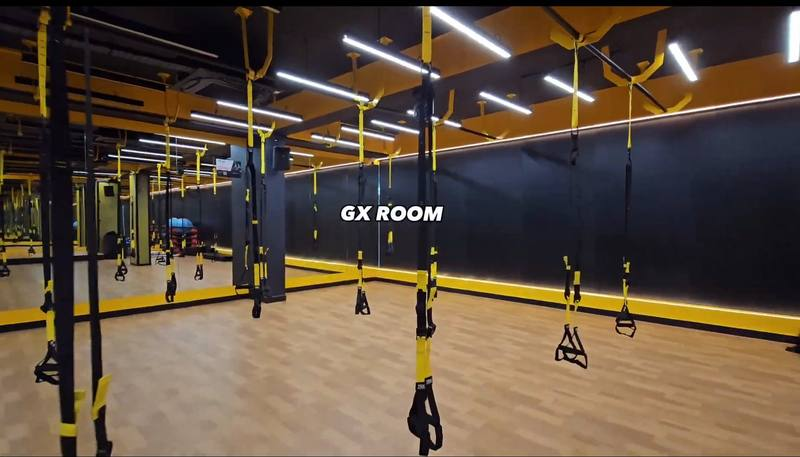
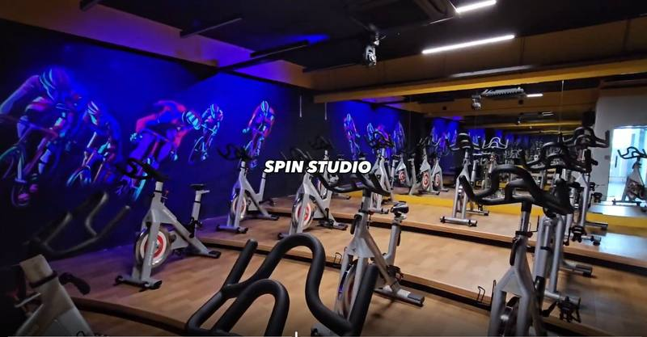
What I observed
Content amplified something that was already real. The staff were engaged, the community was genuine, and members started scheduling shoots themselves without being asked. The content culture became self-sustaining because it was reflecting a place people actually wanted to be part of.
Results
Across both clients, the work drove visible community engagement and brand awareness. Members actively participated in video content, shared stories and reels organically, and engaged with posts through comments, challenges, and UGC. At SK-27, daily story views grew consistently as the account built momentum, and event campaigns around class launches and marathon partnerships generated real foot traffic and enquiries. At Kintore, cinematic content brought a level of visual quality the brand hadn't had before, giving the agency stronger assets to work with and establishing a recognisable content style for the page.
The key insight
The same person. Two gyms. Years of resistance to personal training at Kintore, then a three month PT commitment signed within weeks at SK-27.
My father was a member at both gyms. The product was identical, strength and conditioning. The difference was trust, community, and the environment that content was operating inside. This taught me that content is an amplifier, not a fix. It makes good things louder. It cannot compensate for what isn't there.